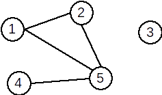
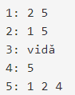

Pentru un graf neorientat G=(X,U) cu n vârfuri, matricea de adiacență este o matrice cu n linii și n coloane și elemente din {0,1}, cu:
Exemplu: Pentru graful neorientat de mai jos avem următoarea matrice de adiacență:
|  |
Observații:
0;x este egal cu numărul de elemente 1 de pe linia (sau coloana) x;Lista de muchii a unui graf neorientat reprezintă o mulțime ce conține toate muchiile din graf.
Pentru graful alăturat, lista de muchii este:
U={[1,2],[1,5],[2,5],[4,5]}
Pentru reprezentarea în memorie putem folosi:
struct {int I,J;}int Pentru un graf neorientat cu G=(X,U) se va memora numărul de vârfuri n și apoi, pentru fiecare vârf x, lista vârfurilor adiacente cu x, adică a vârfurilor y cu proprietatea că există muchia [x,y].
Pentru graful alăturat, listele de adiacență sunt:

La reprezentarea în memorie trebui avut în vedere că dimensiunile listelor de vecini sunt variabile. De aceea, este neeficientă utilizarea unor tablouri alocate static. Astfel, putem folosi:
n tablouri unidimensionale alocate dinamic;n vectori din STL;n liste simplu (dublu) înlănțuite alocate dinamic.